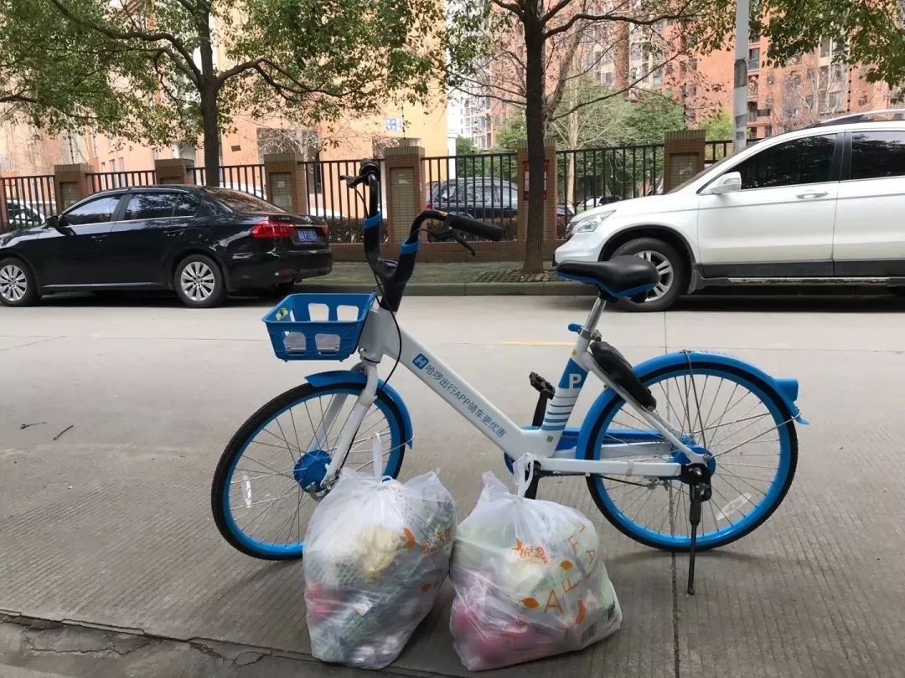
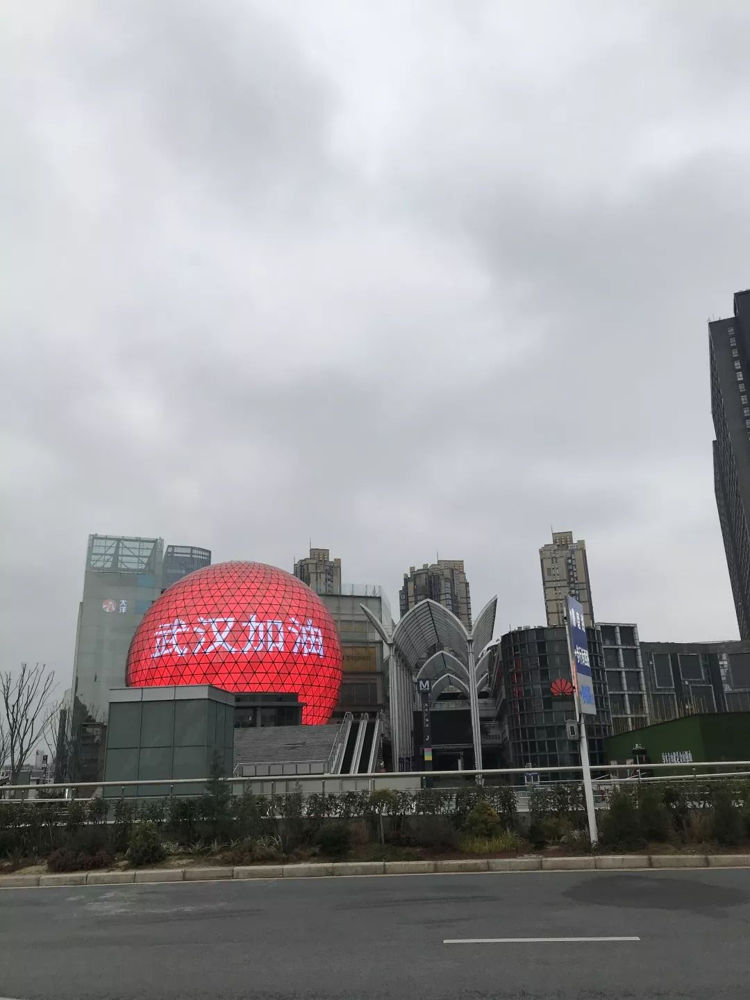

小粉车业余骑手：“我多跑几单，武汉就少几家感染的可能”
原文链接 备份链接 一场新冠肺炎疫情打乱了所有人的生活节奏，医生不眠不休走上抗疫最前线，企业加班加点生产防护物资，民间组织合力协调各方力量，也有热心人力所能及为抗疫出一分力 文｜《财经》记者 马霖 编辑｜余乐 整个春节期间，武汉的街道不 …

文 | 杨长安
情人节后的第二天，辛野开始帮助在外地回不了武汉的人喂宠物。
在此之前，这位健身教练在仅有一个棉质口罩的情况下，为不能出门的武汉居民送了九天的食物和生活用品。二月的武汉还很寒冷，注册为临时跑腿员的辛野，在连续多日骑车送货后，感冒了。
居家休整一段时间，确认身体已经没问题后，辛野重新开始了帮助他人的行动。
以下是辛野的自述：
1月23号，我醒来看到封城的消息，发现朋友圈都在抢菜。我想即使不抢菜我也得买点吃的。然后我就去超市买了两包方便面，看到很多店铺在卖口罩，我就想要不买点口罩。但转念一想，我好像也不需要，就回家了。
那时对疫情不了解，我对封城完全是懵的。本来以为封城只是不能乘坐交通工具，门还是可以出的，包括封城一两天之后我出门感觉戴口罩的人也不算多。但后来出了数据，我才知道疫情已经这么严重。
有跑腿的想法，是因为某天在群里看到很多人说出不了门，没办法买菜，或者家里小孩奶粉都快吃不上了，外卖小哥又人手不足，下了单能不能被接全凭运气。
我看了心里很难过，就决定为武汉人民出一份力。我身体好免疫力强，可以给不能出门的人们送生活用品。
总不能让大家饿着不是？
我的家人都在内蒙古老家，也没打算告诉他们我跑腿的事。做这件事之前我已经做好了心理准备，所以哪怕买不到口罩，没有防护服，没有护目镜，我也坚持送到了10号。
平均下来我每天大概能接五单左右，每一单十几二十块钱。我买菜是四五单一起买，备菜、排队、买单差不多花掉五个小时，送单又会花掉两个小时，到下午六点电动车没电我才会回家。基本上所有单都会超时，因为光是抢菜和排队就会花掉很长时间，但客人都能理解。

辛野跑腿时买的菜
开始几天抢菜情况挺严重的，后面稍微缓解了一些。
超市目前相对缺主食类的货，比如挂面，方便面，面粉，饺子等等，肉类、火腿肠也比较难买，青菜类供应得还行。最近，因为大家不出门有一阵了，对米、面、酱油、盐、水果的需求量多了起来，订单里还有要卫生巾的。
有一次给一户被隔离的家庭送菜，我车没电了，就骑共享单车去送。那天我车筐放了一包，两个龙头各挂了一包，很沉，所以骑得慢。
这位客人一直强调让我放在小区门口就行，他过后再下来拿。后来才知道他们家正在隔离，所以他不能和我见面，只好在微信道谢。
还有一次，我接到一位豆瓣网友的送菜求助。我骑着共享单车，从最东边的光谷骑到最西边的后湖，来回80公里，我一分跑腿费都没要。

辛野骑单车送菜
我在微博上记录这次送菜经历的时候，就有网友质疑我是不是为了钱去送这一单。实际上为了钱我反而不会去送，因为我在疫情期间跑腿本来就不是为了钱。我在平台上经常见到需要从武昌送到汉口，也就是跨江的单，有100多块钱跑腿费，但我从来没有接过。
我只是觉得自己有能力去帮助这位网友，所以就去了。
很多人在手机里高谈阔论，实际的事儿一件没做，反而质疑付诸行动的人。为什么我现在没有觉得很丧，是因为我每天都在给予别人温暖，别人也在回馈给我温暖。
每天一跑起单来我就没空吃饭，喝水，也上不了厕所。我本身不是室外工作者，工作生活基本都在室内，所以没有很厚的衣服。骑车经常冷得不行，有时候飘个小雨就更冷。
一开始对有的地方路不熟，还得一只手控制车，一只手拿着手机看客人的位置。有一天我车跑到没电了，大晚上推车十来公里走回去，路上一个人都没有。

武汉的夜晚
当时也会怀疑自己为什么要这样做，不过后来还是想通了，只要看到别人生活中困难又少了一个，我就会觉得特别开心。
生病的时候我也没有想过放弃。我觉得无论做什么事都像健身，如果你一定需要一个理由说服自己去做，那么你也就很容易说服自己放弃。所以当初去做这件事我没有纠结，最后我也不会因为什么理由轻易放弃。
对于前段时间有媒体报道一位体型健美的老人去世，我的看法是大家无需过于担忧。健身不等于健康，肌肉发达也不等于免疫系统强大。健康和好的生活习惯，以及在疫情时期做好防护措施是息息相关的，跟你有没有一身肌肉毫无关系。
从刚开始默默无闻送货，到后来在豆瓣、微博受到关注，我觉得自己心态最大的变化就是，发现这个社会太需要爱了。和这么多陌生人产生了联结、收到了五湖四海的关心之后，我感觉到原来大家都有能力去给予爱。
我的微信签名是“欢迎来到人间”，意思就是我觉得人间温暖且值得，同时也希望大家可以跟我一起温暖人间。
我会继续跑腿到开城，陪着这座城市走向新生。

「相关文章」
「征集活动」
无论你是医护人员、患者，还是普通人
都可以点击“阅读原文”和我们联系
分享你与疫情的故事

「联系我们」
欢迎关心武汉疫情和“云林街十七号”的你
进入我们的微信群
后台留言“进群”
加志愿者微信
原文链接 备份链接 一场新冠肺炎疫情打乱了所有人的生活节奏，医生不眠不休走上抗疫最前线，企业加班加点生产防护物资，民间组织合力协调各方力量，也有热心人力所能及为抗疫出一分力 文｜《财经》记者 马霖 编辑｜余乐 整个春节期间，武汉的街道不 …
原文链接 备份链接 *************▲*************1月29日，钱珵戴着用文件袋改装的面罩，在医院抽完血后自拍。 （受访者供图/图） 全文共4492字，阅读大约需要10分钟。 这次疫情有影响到我最近写剧本的内容， …
原文链接 备份链接 有武汉人滞留在外地，就有外地人滞留在武汉。 1月23日凌晨，武汉宣布封城。 2月10日，湖北省以外的地区陆续开工，这让滞留在武汉的人更希望知道出城的日期。 恰值人口高峰流动期，没有数据统计滞留在武汉的人到底有多少。但各 …
原文链接 备份链接 编者荐语： 马子本来计划春节出游，结果回来过个年，就因疫情封城动弹不得了。我俩见个面都难。天门疫情确实严峻，希望大家能多给予关注。瘟疫面前，命无贵贱，人人平等。 © 图文 阅路山 2020年2月4日 立春 武汉封城的 …
原文链接 备份链接 1⁄7 *不为这座城市做点什么，最后，可能这座城市就完了……* 2020年1月30日 @雷锋小杨 坐标：武汉 大家就叫我雷锋小杨吧，我也不想留名。 我是武汉人，做酒店管理工作。我们的酒店在远城区，现在还在营 …